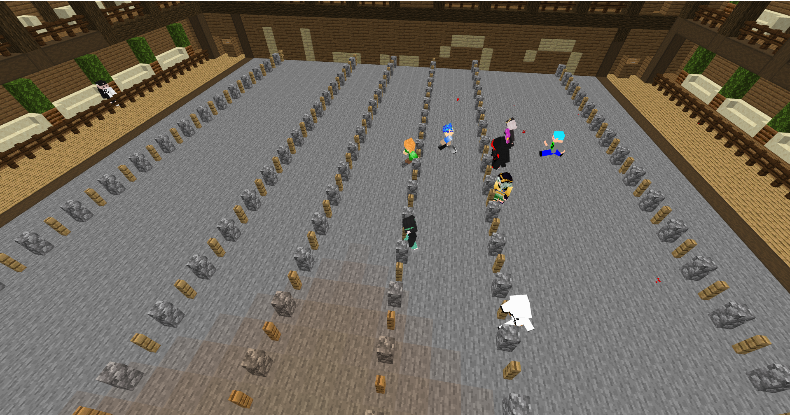

【悲報】シャトルラン、過疎化が止まらないｗｗｗｗ 遊び尽くしたプレイヤーの悲しい叫び

どうも、Niju Server まとめ速報です！
今回は、Niju Serverの企画の一つ「シャトルラン」について。その人気の高さからサーバーに定着したものの、今、過疎化が深刻だと話題になっています。
理由はもちろん、配布ワールドとして公開されているため、みんなが遊び尽くしてしまったからです...
シャトルランとは？ 楽しすぎるがゆえの弊害
シャトルランは、タイムを競うシンプルなマイクラのミニゲームです。コースの設計が秀逸で、一度ハマるとやめられない面白さがあります。
しかし、この企画の性質上、以下の問題が発生しています。
- 配布ワールドであるため、コースが固定。攻略法が確立されている。
- プレイヤーは全てを遊び尽くし、残っているのは記録更新を目指すガチ勢だけ。
- 結果、誰もいなくなり、今や記録ボードだけが虚しく残る状態に...。
「面白すぎるゲームは、飽きられるのも早い」という皮肉な状況です。
スレの様子：遊び尽くしたプレイヤーたちの悲しい叫び
シャトルランスレでは、誰とも出会えない現状に対する、プレイヤーたちの悲しいながらもユーモラスな叫びが投稿されています。
シャトルランの過疎化が止まらない件ｗｗｗ
1 ：名無しNiju号：2024/09/08(日) 15:44:07 ID:tO4HPaqvd
シャトルラン来たけど誰もいねえｗｗｗ
フレンドと話そうかと思ったけどソロランだったわｗ
シャトルラン来たけど誰もいねえｗｗｗ
フレンドと話そうかと思ったけどソロランだったわｗ
2 ：名無しNiju号：2024/09/08(日) 15:47:14 ID:KgaOh6xap
>>1
むしろ今はソロで集中する時間ね
50ステージまではもう画面見なくても走れるレベルになった
>>1
むしろ今はソロで集中する時間ね
50ステージまではもう画面見なくても走れるレベルになった
7 ：名無しNiju号：2024/09/08(日) 15:56:21 ID:Gh/7b8xf0
新しい企画はよ
どんなに面白くても同じコースだと限界がある
新しい企画はよ
どんなに面白くても同じコースだと限界がある
16 ：名無しのランナー：2024/09/08(日) 16:38:20 ID:6R84pyfa0
>>2
確かに過疎ってるけどワールドのクオリティ自体は高いんよな
「過疎ってるけど面白い」という矛盾した状態
>>2
確かに過疎ってるけどワールドのクオリティ自体は高いんよな
「過疎ってるけど面白い」という矛盾した状態
過疎でも遊び続けるプレイヤーの熱意は本物。運営は新しい配布ワールドの導入か、「シャトルランR (リニューアル)」の企画を早急に進めてほしいところです！